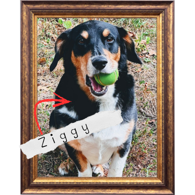

What is Zdog?

Zdog, like many great ideas, was inspired by a angel dog.
Now… we aren’t here to argue the semantics of how great dogs are, but Zdog represents more than just that, its that deep feeling in everyone, to greet your loved ones at the door, get outside, chase your biggest dreams, and always enjoy yourself a little treat.
The ultimate goal of Zdog is to create a place to catalog our adventures, become an outdoor resource for ourselves and friends, and chase a passion for adventure and exploration. We hope you find valuable information in our pages and new and fun ways to get outside.
Catchyou on the flipside.